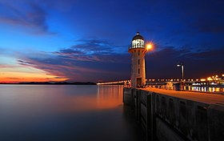

Tuas
Tuas is a planning area located within the West Region of Singapore.
It is bounded by the Western Water Catchment to its north, Pioneer to its east and the Straits of Johor to its west.
Tuas also shares a maritime boundary with the Western Islands planning area to its east.

Home Page